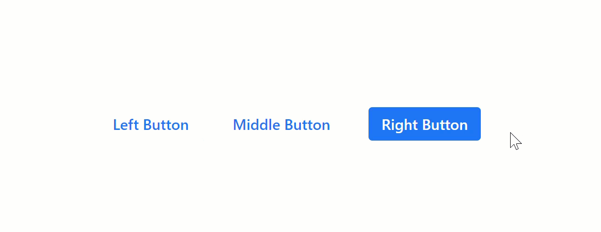
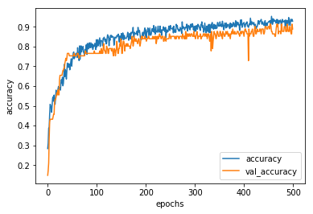
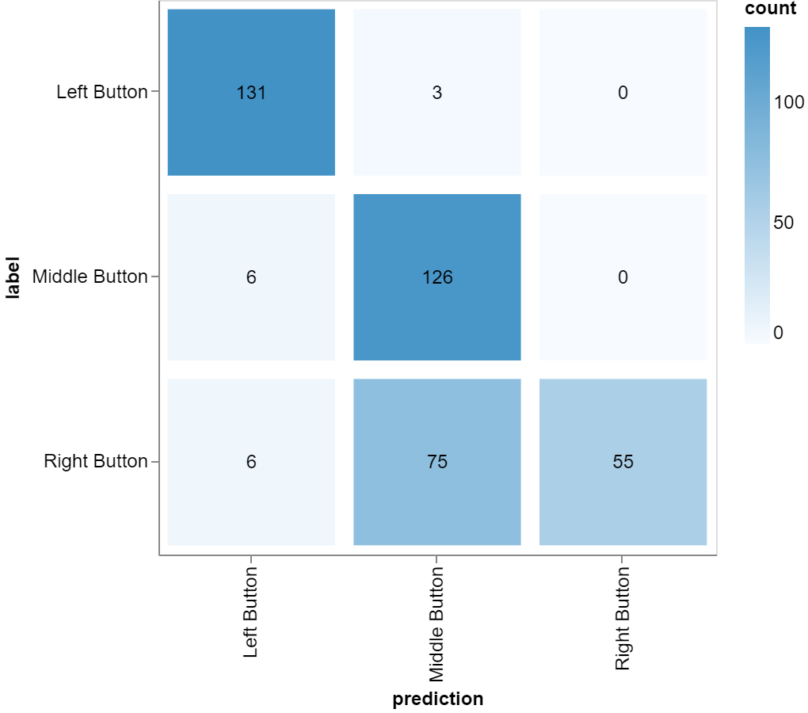
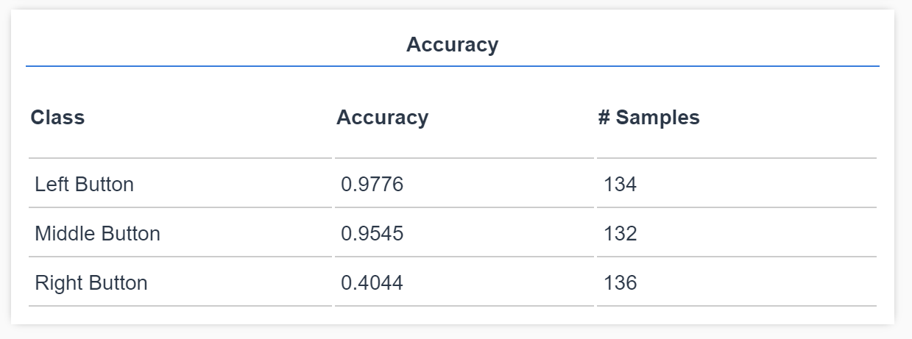

Brauchen wir, damit später das Format des Codes stimmt
### Preparation 1. Start Chrome using "Run With Graphics Processor" (scheint viel langsamer, Problem zu klein?) 1. lokal zum laufen bringen (Als Notlösung https://djcordhose.github.io/ux-by-tfjs/dist/) 1. Create a bit of data for ux demo, so dass es trainiert 1. Beide Zeichnungen öffnen * <img src='img/sketch/classic-development.jpg' height="50px"> * <img src='img/sketch/supervised-ml.jpg' height="50px"> 1. Notebook für Training auf Server öffnen https://colab.research.google.com/github/DJCordhose/ux-by-tfjs/blob/master/notebooks/click-sequence-model.ipynb
### Story 1. App oben zeigen 1. Paar Daten sammeln 1. Erst das Training zeigen 1. Idee von ML anhand der 2 Zeichnungen aus 1. App zeigen 1. Unbedienbar - vergleich schlimmste App der Welt: https://userinyerface.com 1. Shift-Reload 1. Help Modus 1. ML vom Server 1. Weitere Möglichkeit: Vorhersage Novice / Advanced, welcher User 1. Ideen einsammeln
Improving UX with Machine Learning
UX Camp Hamburg, July 2019
Oliver Zeigermann
/
@DJCordhose
xxx
### Central Question ## How can we help our users find the right buttons to click?
<a href='https://twitter.com/PPathole/status/1100406765156327427'> <img src='img/ux/ux-joke1.png' height="550px"> </a> <small> https://twitter.com/PPathole/status/1100406765156327427 </small>
<a href='https://twitter.com/page_eco/status/1082971149208772609'> </a> <small> https://twitter.com/page_eco/status/1082971149208772609 </small>
<small> https://twitter.com/dkhan/status/1129153536565104641 </small>
### Demo _Which button to click?_ <img src='img/ux/bad_ux.png'> http://djcordhose.github.io/ux-by-tfjs/dist
## How can machine learning help?
### First things first ## What is the idea of machine learning?
<img src='img/sketch/classic-development.jpg' height="600px">
<img src='img/sketch/supervised-ml.jpg' height="600px">
### Supervised Machine Learning fits best when * the problem at hand is hard to specify * you have a lot of examples * solving the problem can tolerate some error or uncertainty * there is a clear, simple input and output
### Training Data <pre><code contenteditable data-trim class="line-numbers javascript"> [ "train-model", "save-model-to-local" ], [ "train-model", "show-eval", "train-model", "save-model-to-local" ], [ "load-local-model", "toggle-prediction" ] </code></pre>
### Training Setup <a href='https://colab.research.google.com/github/DJCordhose/ux-by-tfjs/blob/master/notebooks/click-sequence-model.ipynb'> <img src='img/ux/click-model-setup.png' height="450"> </a> <small> https://colab.research.google.com/github/DJCordhose/ux-by-tfjs/blob/master/notebooks/click-sequence-model.ipynb </small>
### Training <img src='img/ux/click_acc.png' style="background-color: azure">
### Evaluation <img src='img/ux/click_cm.png' style="background-color: azure" height="550px">
### Prediction <img src='img/ux/click_prediction.gif'> http://djcordhose.github.io/ux-by-tfjs/dist
## Second example
### Standard UX trick: Highlight button user hovers over <img src='img/ux/app.gif' class="fragment">
### But, could we highlight the button the user is going to click next? 
## Why would we do even this?
#### Predicting properly which button the user is going to click next we can ... * Prepare Resources in Advance * Serverless function pre-start * Preload audio/video/AR media to be played next * Prelaod lazyly loaded module * UX * (unnoticeably) highlight or zoom in/out button to make it easier/harder to access for user * Marketing, Ads, https://www.darkpatterns.org/ (https://copenhagenletter.org/ would not like this, though)
### Steps for machine learning 1. Clarify: What is your objective? 1. What data do you have or could you acquire? 1. Create an architecture for your model matching your data 1. Train your model 1. Evaluate the model: Satisfied? * Satisfied 1. Deployment 1. Prediction 1. Monitoring * collect more data * check: is live data from the same distribution as training data * Not Satisfied 1. More or better data 1. Better architecture 1. Better training 1. Rinse and Repeat
### Step 2 ## What data do we have or could we acquire?
<img src='img/ux/mouse-prediction.png'>
### Collecting Events for Mouse Movements <img src='img/ux/mouse-positions.png' class="fragment">
### Why this is a tricky case * Data * very much depends on user and machine used * might even be good enough to identify individual user * sending it to our server seems suspicious * Training and Prediction * low latency for prediction * incremental and fast training * small amounts of data, still needs to generalize * actual data unknown upfront
<small> https://twitter.com/jaredpalmer/status/1145412000975065091 </small>
<img src='img/tfjs/jsconfeu-why-ml-in-browser.jpg' height="550px"> <small> @nsthorat @jsconfeu </small>
### TensorFlow.js <img src='img/ux/tfjs.png'> <small> https://www.tensorflow.org/js/ </small>
<img src='img/tfjs/jsconfeu-tfjs-overview.jpg' height="550px"> <small> @nsthorat @jsconfeu </small>
### Train and predict on the edge side _Train an individual model per user directly in the browser_ * data does not leave the machine of the user * same goes for model * low-latency training and prediction
### Step 3 ## Create an architecture for your model matching your data
#### Foundation of Neural Networks <img src='img/insurance/neuron213.jpg' height="500px"> <small>That's more of less the only thing TensorFlow.js supports</small>
#### From Neuron to Network <a href='https://playground.tensorflow.org'><img src='img/tf-plaground.png' height="500px"> </a> <small> https://playground.tensorflow.org </small>
### Challenge: Such Networks have no memory of previous events They lack capability to deal with sequential data which our mouse movements really are
### RNNs - Networks with Loops <img src='img/nlp/colah/RNN-rolled.png' height="450px" style="background-color: aliceblue"> <small> http://colah.github.io/posts/2015-08-Understanding-LSTMs/ </small>
### Unrolling the loop <img src='img/nlp/colah/RNN-unrolled.png' style="background-color: aliceblue"> <small> http://colah.github.io/posts/2015-08-Understanding-LSTMs/ </small>
#### Options for Model architectures <pre><code contenteditable data-trim class="fragment line-numbers javascript"> // trains fast, bad evaluation, // but in real life does what we expect, // only uses very recent history, // generalizing great by proximity tf.layers.simpleRNN({ units: 50, dropout: 0.1 }) </code></pre> <pre><code contenteditable data-trim class="fragment line-numbers javascript"> // GRUs are great in learning history // learns complete paths, best evaluation in numbers tf.layers.gru({ units: 50, dropout: 0.1 }) </code></pre> <pre><code contenteditable data-trim class="fragment line-numbers javascript"> // LSTMs are similar to GRUs, but more complex // slower to train and worse evaluation, // but really good real world performance tf.layers.lstm({ units: 50, dropout: 0.1 }) </code></pre>
<img src='img/xkcd-machine_learning_2x.png' height="550px"> https://xkcd.com/1838/
### Step 4 ## Train your model
#### Training runs asynchronously in the background using WebGL on your GPU <pre><code contenteditable data-trim class="fragment line-numbers javascript"> model.compile({ loss: "sparseCategoricalCrossentropy", optimizer: "adam", metrics: ["accuracy"] }); </code></pre> <pre><code contenteditable data-trim class="fragment line-numbers javascript"> const history = await model.fit(X, y, { epochs: 200, validationSplit: 0.2 }); </code></pre>
<img src='img/xkcd-compiling.png' height="550px"> https://xkcd.com/303/
### Demo: Training http://djcordhose.github.io/ux-by-tfjs/dist
### Step 5 ## Evaluate the model
### Generalization * We need to find out if our model is good before going to production * Wow should we estimate the quality of our model? * We want to know how well it will perform on previously unknown data * How is that possible?
### A standard Workflow <img src='img/flow-train.jpg'>
### Accuracy Training Curves 
### Confusion Matrix 
### Accuracy per Class 
### Step 6 ## Deployment, Prediction
### Model is trained and used locally <pre><code contenteditable data-trim class="fragment line-numbers javascript"> // saving in IndexedDB await model.save("indexeddb://ux"); </code></pre> <pre><code contenteditable data-trim class="fragment line-numbers javascript"> // loading from IndexedDB model = await tf.loadLayersModel('indexeddb://ux'); </code></pre> <pre><code contenteditable data-trim class="fragment line-numbers javascript"> // model could be served from remote without any change (except for online) const url = "https://raw.githubusercontent.com/DJCordhose/ux-by-tfjs/master/model/ux.json"; model = await tf.loadLayersModel(url); </code></pre> <pre><code contenteditable data-trim class="fragment line-numbers javascript"> const prediction = await model.predict(X).data(); </code></pre>
### Results for Simple RNN
### Results for LSTM <img src='img/ux/lstm.gif' class="fragment" height="500px">
### Demo: Live Predictions http://djcordhose.github.io/ux-by-tfjs/dist
### Why monitoring is important Staleness of model: the world changes, your model stays the same * you only find when monitoring performance * internal / external keyboard * mouse vs trackpad Measures * Save training statistics and compare to production or * Train binary classifier to separate training from production data. Possible? Different distributions Don't use model if applied on different data
### How to improve * Morph predicted buttons in the direction of the mouse * Transfer Learning: start with a more general model and retrain * Federated Learning: use experience from all users without sharing data or model (transfer gradients) * https://github.com/PAIR-code/federated-learning * https://github.com/tensorflow/federated * Silent Test Phase: measure prediction vs reality internally still collect samples * Evaluate with newer data without even without going into production * Train continuously * Switch on prediction as soon as model is good
### More ideas 1. Improve UX by highlighting parts that are likely to be clicked next (using click path instead of mouse events) 1. Use mouse movements to predict: beginner or advanced? 1. Detect user. Fraud? Robot? 1. Talk to me about your ideas
### What else is cool? * more examples and a full demo for a chat bot using TensorFlow.js from Goolge IO 2019: https://www.youtube.com/watch?v=D7ZL45xS39I * Bob Ross pix2pix: https://twitter.com/jdwlbr/status/1131244682317484032 * GAN Harp: https://twitter.com/ctpt_studio/status/1131975006173507585 * BodyPix: https://twitter.com/TensorFlow/status/1096519420816568322 * https://storage.googleapis.com/tfjs-models/demos/body-pix/index.html
### Wrap-Up _Feel free to say "Hello" after the talk_ * TensorFlow.js (tfjs) allows for completely new ways of training and deploying neural networks * tfjs allows to train and use models in the browser using WebGL on your GPU * very interesting for GDPR and highly interactive predictions <!-- * tfjs mimics TensorFlows Keras API --> * use can also convert standard TensorFlow models to use them with tfjs * tfjs-vis provides us with powerful tools for visualizing training results _Machine Learning from Idea to Production with TensorFlow.js, enterjs 2019_ <small> <a href="http://zeigermann.eu">Oliver Zeigermann</a> / <a href="http://twitter.com/djcordhose">@DJCordhose</a> <br> Slides: http://bit.ly/tfjs-enterjs </small>